|
Κεφάλαιο 1 - Εισαγωγή στην Τεχνολογία Λογισμικού
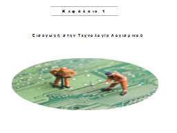
Κεφάλαιο 5 - Απαιτήσεις Λογισμικού
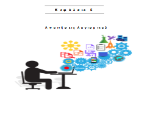
Κεφάλαιο 8 - Εννοιολογικό Μοντέλο
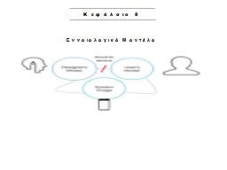
Κεφάλαιο 11 - Τα διαγράμματα συνεργασίας
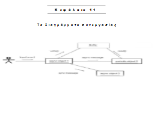
Κεφάλαιο 14 - Έλεγχος ορθής λειτουργίας λογισμικού (Software Testing)
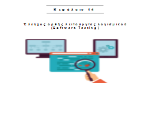
ΤΕΣΤ Α
|
Κεφάλαιο 2 - Διαδικασίες παραγωγής λογισμικού
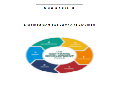
Κεφάλαιο 6 (Α) - Εισαγωγή στην αντικειμενοστραφή τεχνολογία
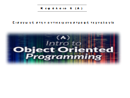
Κεφάλαιο 9(Α) - Τα διαγράμματα κλάσεων
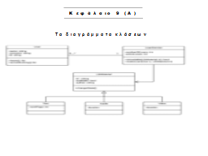
Κεφάλαιο 12 - Σύντομο παράδειγμα μιας συνοπτικής μεθοδολογίας ανάπτυξης
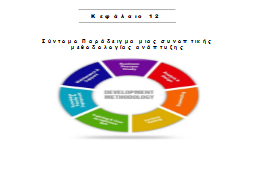
ΤΕΣΤ Β
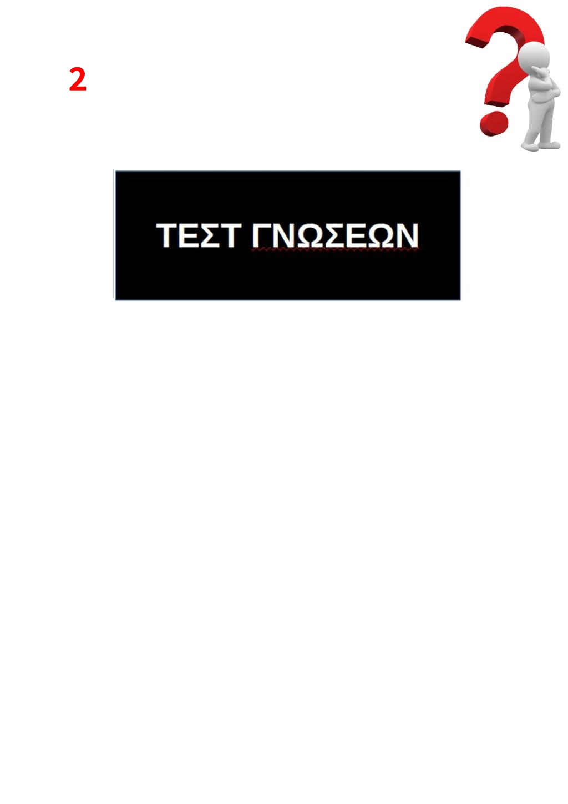
|
Κεφάλαιο 3 - Ευέλικτες Μεθοδολογίες
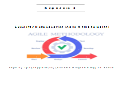
Κεφάλαιο 6 (Β) - Εισαγωγή στην αντικειμενοστραφή τεχνολογία
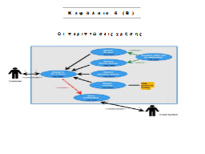
Κεφάλαιο 9(Β) - Ασκήσεις σε διαγράμματα κλάσεων
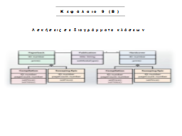
Κεφάλαιο 13 (A) - Τα πρότυπα σχεδίασης(Adapter, Othercircle.java, Composite)
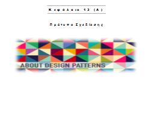
ΤΕΣΤ Γ
|
Κεφάλαιο 4 - Έναρξη Έργου / Προγραμματισμός Συστήματος / Μελέτη Σκοπιμότητας
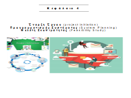
Κεφάλαιο 7 - Παράδειγμα διαγράμματος περιπτώσεων χρήσης
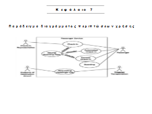
Κεφάλαιο 10 - Τα διαγράμματα ακολουθίας
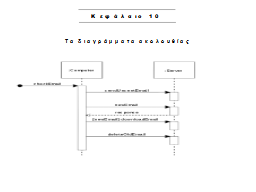
Κεφάλαιο 13 (Β) - Τα πρότυπα σχεδίασης(Bridge, Singleton, Visitor, Observer, Στρατηγική)
ΤΕΣΤ Δ
|